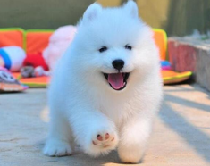

首页
宠物品种
宠物用品
宠物护理
宠物美容
在线留言
泰迪犬
泰迪狗是非常受欢迎的体型较小的宠物伴侣。欢快，好动，聪明的特点让很多女士们选择泰迪狗做宠物。

萨摩犬
摩耶德犬有着非常引人注目的外表：雪白的被毛，微笑的脸和黑色而聪明的眼睛，是现在的犬中漂亮的一种。萨摩耶德犬天生聪明，对主人绝对忠诚。
金毛犬
金毛比较耐寒，适合家居生活，贪玩、活跃而不爱吵闹，非常容易训练，容易与别的犬相处，是初次养狗人的首选。
拉布拉多犬
拉布拉多犬性温和，体大，爱贪吃，行动稳健，眼神柔情。在众狗狗里拉布拉多犬是个很温顺、乖巧的孩子。
边境牧羊犬
边境牧羊犬是世界上智商较高的犬，教他学习一个新知识不需要超过5次他就能完成，在主人的教导下也能学会很多东西，不过它会尽可能地与你斗智斗勇。
阿拉斯加
一般认为阿拉斯加雪橇犬相对于哈士奇更加敦厚和稳重，阿拉斯加雪橇犬忠实，能力强。是优秀的警备犬和工作犬，也是富有感情的家庭犬。
哈士奇
较大的优势莫过于它漂亮冷酷的外型，几乎每个见过小哈的人，都会发自内心的喜爱，也许说明了人类对狼的一种虏获心理吧。
宠物饭盒
宠物毛毯
宠物牵引
宠物衣服
如何让猫固定地点睡觉
2018-05-02
猫咪是个跳跃高手，不像狗狗如果你禁止它不许去床上睡觉，它有时候就是想去睡觉也跳不上去，猫咪就不一样了，简直是来去自...
宠物猫藓病的诊断与治疗
2018-05-02
猫咪是个跳跃高手，不像狗狗如果你禁止它不许去床上睡觉，它有时候就是想去睡觉也跳不上去，猫咪就不一样了，简直是来去自...
如何让猫固定地点睡觉
2018-05-02
猫咪是个跳跃高手，不像狗狗如果你禁止它不许去床上睡觉，它有时候就是想去睡觉也跳不上去，猫咪就不一样了，简直是来去自...
咨询电话：13926087792
首页
|
宠物美容
|
宠物品种
|
宠物用品
电子邮箱：1185996517@qq.com
2016 遇见宠屋 版权所有
联系地址：湖南省衡阳市解放路
本站使用
凡科建站
搭建
|
管理登录